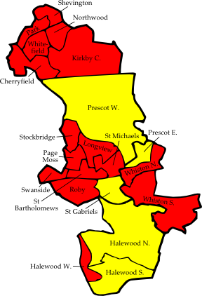
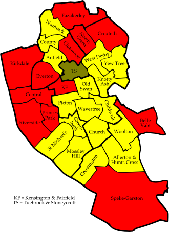
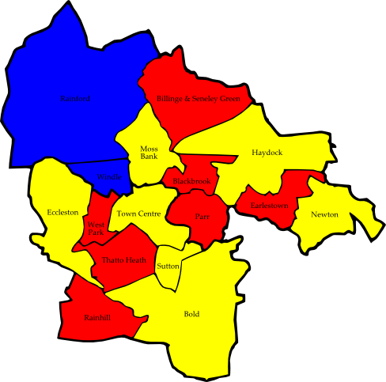

4.1 Knowsley
US = United Socialist
Cherryfield
|
David Lonergan | Lab | 760 |
| John White | LD | 276 |
Halewood North
|
David Smithson | LD | 812 |
| Edna Finneran | Lab | 369 |
Halewood South
|
Dorothy Birch | LD | 576 |
| Roy Nicholson | Lab | 533 |
| Andrew Thompson | US | 310 |
Halewood West
|
Thomas Fearns | Lab | 794 |
| Eric McIntosh | US | 282 |
Kirkby Central
Longview
|
Samuel Lee | Lab | 716 |
| Gerald Donnelly | LD | 276 |
Northwood
|
Michael Murphy | Lab | 587 |
| Patrick Williams | LD | 342 |
Page Moss
|
Laurence Nolan | Lab | 765 |
| Leslie Rigby | LD | 156 |
Park
|
John Greer | Lab | 634 |
| Thomas Rossiter | LD | 314 |
Prescot East
|
Joseph McGarry | LD | 747 |
| David Friar | Lab | 555 |
Prescot West
|
John Wynn | LD | 867 |
| Robert Whiley | Lab | 494 |
| Stephen Whatham | Soc Lab | 149 |
Roby
|
Christina O'Hare | Lab | 988 |
| Gary Robertson | C | 851 |
St Bartholomews (2)
|
Margaret Harvey | Lab | 819 |
| Anthony Cunningham | Lab | 789 |
| Malcolm Swainbank | LD | 365 |
| Mahmood Surti | LD | 236 |
St Gabriels
|
Frederick Fricker | LD | 737 |
| Michael Peers | Lab | 579 |
St Michaels
|
Kenneth Keith | Lab | 882 |
| Gary Anderson | LD | 557 |
Shevington
Stockbridge
Swanside
|
Graham Wright | Lab | 1,098 |
| Gillian Robertson | C | 350 |
Whiston North
|
Pauline Kelly | Lab | 660 |
| Michael Lappin | LD | 621 |
Whiston South
|
Anthony Newman | Lab | 719 |
| Yvonne Southern | LD | 685 |
Whitefield
|
Doris Keats | Lab | 792 |
| Peter Fisher | LD | 288 |
| Gary Aronsson | BNP | 188 |
Consolidated Results — Knowsley
|
Labour | 12,744 | 56.7% | 17 councillors (3 unopposed) |
| Liberal Democrat | 7,619 | 33.9% | 5 councillors |
| Conservative | 1,201 | 5.3% | |
| United Socialist | 592 | 2.6% | |
| British National Party | 188 | 0.8% | |
| Socialist Labour Party | 149 | 0.7% | |

| Figure 4.1: Knowsley 2006 |
4.2 Liverpool
US = United Socialist
Allerton and Hunts Cross
|
Vera Best | LD | 1,619 |
| Daniel Hughes | Lab | 687 |
| Brenda Coppell | C | 556 |
| Margaret Williams | Grn | 211 |
| Christopher Hulme | Lib | 194 |
Anfield
|
Andrew Tremarco | LD | 1,101 |
| Brian Dowling | Lab | 824 |
| Michael Butler | Lib | 448 |
| Shane Delaney | Grn | 133 |
| Allen Epsley | C | 95 |
Belle Vale
|
Pauline Walton | Lab | 1,903 |
| Peter Rainford | LD | 1,556 |
| Deborah Mayes | Lib | 131 |
| Norman Coppell | C | 94 |
Central
|
Nick Small | Lab | 719 |
| Paul Twigger | LD | 395 |
| Peter Cranie | Grn | 104 |
| Mark Cottrell | C | 102 |
| Karl Prescott | Lib | 29 |
Childwall
|
Sir Trevor Jones | LD | 2,084 |
| Janet Kent | Lab | 661 |
| June Brandwood | C | 294 |
| Faye Griffiths | Grn | 242 |
| Francis Porter | Lib | 87 |
Church
|
Colin Eldridge | LD | 2,306 |
| Timothy Beaumont | Lab | 501 |
| Eleanor Martin | Grn | 335 |
| Graham Jones | C | 291 |
| Jeffrey Berman | Ind | 274 |
| James MacGregor | Lib | 122 |
Clubmoor
|
Roz Gladden | Lab | 1,440 |
| David Maher | Lib | 791 |
| James Gaskell | LD | 410 |
| Gwynneth Hicklin | C | 132 |
| Andrew Hoban | Grn | 120 |
| Kai Anderson | Soc Lab | 71 |
County
|
Paul Clark | LD | 1,380 |
| Patrick Delahunty | Lab | 1,080 |
| Roger Webb | Lib | 84 |
| Francis Stevens | C | 73 |
Cressington
|
Richard Oglethorpe | LD | 1,856 |
| Catherine Dooley | Lab | 778 |
| Emlyn Williams | C | 381 |
| Richard de Pesando | Grn | 292 |
| John Moore | Lib | 227 |
Croxteth
|
Nadia Stewart | Lab | 1,804 |
| Patrick Moloney | LD | 902 |
| Anne Graham | Grn | 151 |
| Jane Canning | Lib | 77 |
Everton
|
John McIntosh | Lab | 1,519 |
| Craig Crennell | LD | 296 |
| Matthew Sephton | C | 140 |
| Adam Howarth | Grn | 137 |
| David Wood | Lib | 117 |
Fazakerley
|
Dave Hanratty | Lab | 1,450 |
| Graham Seddon | LD | 1,333 |
| Charles Mayes | Lib | 121 |
| Myra Fitzsimmons | C | 113 |
Greenbank
|
Linda-Jane Buckle | LD | 1,025 |
| Christopher Helm | Lab | 627 |
| Louise McVey | Grn | 485 |
| Giselle McDonald | C | 246 |
| David O'Brien | Lib | 130 |
Kensington and Fairfield
|
Louise Baldock | Lab | 1,127 |
| Elizabeth Pascoe | Lib | 180 |
| Paula Rice | Grn | 152 |
| Francis Dunne | C | 88 |
Kirkdale
|
Malcolm Kennedy | Lab | 1,958 |
| Francis O'Donoghue | LD | 232 |
| Joseph Moran | UKIP | 182 |
| Thomas O'Brien | C | 69 |
| Alexander Taylor | Grn | 64 |
Knotty Ash
|
Josie Mullen | LD | 1,275 |
| Anthony Concepcion | Lab | 1,175 |
| Andrew Donaldson | Lib | 240 |
| Michael Lind | C | 199 |
Mossley Hill
|
Tina Gould | LD | 1,906 |
| Josephine Lazzari | Lab | 617 |
| Ann Nugent | C | 382 |
| Vicki Anderson | Grn | 367 |
| Patricia Elmour | Lib | 160 |
Norris Green
|
Violet Bebb | Lab | 1,387 |
| John Edgar | BNP | 417 |
| Christine Doyle | LD | 232 |
| Eric Cartmel | Grn | 111 |
| Vera Phillips | Lib | 99 |
| Jonathan Kearney | C | 95 |
Old Swan
|
Keith Turner | LD | 1,436 |
| Wendy Simon | Lab | 859 |
| Edith Bamford | Lib | 172 |
| Mark Bill | UKIP | 150 |
| Pauline Dougherty | C | 148 |
| Paul Grimes | Grn | 134 |
| Paul Filby | US | 68 |
Picton
|
Laurence Sidorczuk | LD | 1,253 |
| Angela Glanville | Lab | 879 |
| Griffith Parry | Lib | 217 |
| Nilesh Chauhan | Grn | 180 |
Princes Park
|
Anna Rothery | Lab | 1,184 |
| Mohamed Ali | LD | 645 |
| Paul Desson | Respect | 281 |
| Sophy Hansford | Grn | 246 |
| Nina Edge | Lib | 210 |
| Alma McGing | C | 96 |
Riverside
|
Joe Anderson | Lab | 1,562 |
| Gabriel Muies | LD | 267 |
| Richard Perkins | C | 205 |
| Jonathan Clatworthy | Grn | 180 |
| Irene Mayes | Lib | 90 |
| Cecilia Ralph | US | 64 |
St Michael's
|
Peter Allen | LD | 1,112 |
| Jean Hill | Grn | 675 |
| Jack Johnson | Lab | 670 |
| David Patmore | C | 225 |
Speke-Garston
|
Doreen Knight | Lab | 2,141 |
| Francis Roderick | LD | 1,138 |
| Cherry Fitzsimmons | Grn | 141 |
| Denise Nuttall | C | 107 |
| Michael Williams | Lib | 84 |
Tuebrook and Stoneycroft
|
Chris Lenton | Lib | 1,587 |
| Allen Hammond | Lab | 628 |
| Richard Williams | LD | 308 |
| Damian Fisher | C | 96 |
Warbreck
|
Jean Seddon | LD | 1,380 |
| Ann O'Byrne | Lab | 1,353 |
| Linda Roberts | Lib | 185 |
| Paul Barber | C | 135 |
Wavertree
|
Steve Hurst | LD | 1,928 |
| Claire Wilner | Lab | 553 |
| Julie Birch-Holt | Grn | 260 |
| David Grundy | C | 142 |
| Susan O'Brien | Lib | 107 |
West Derby
|
Stuart Monkcom | LD | 1,416 |
| Ronald Foy | Lab | 652 |
| Geoffrey Brandwood | C | 308 |
| Stephen Houghland | Lib | 222 |
| Ian Graham | Grn | 204 |
| Stephen Hill | Soc Lab | 59 |
Woolton
|
Malcolm Kelly | LD | 1,959 |
| Stephen Fitzsimmons | C | 752 |
| Laurence Freeman | Lab | 459 |
| Alexander Rudkin | Grn | 188 |
| Maria Langley | Lib | 124 |
Yew Tree
|
Roger Johnston | LD | 1,089 |
| Barbara Murray | Lab | 1,076 |
| Brian Jones | C | 205 |
| Tracey Hawksford | Lib | 197 |
Consolidated Results — Liverpool
|
Liberal Democrat | 33,839 | 40.2% | 17 councillors |
| Labour | 31,553 | 37.5% | 12 councillors |
| Liberal Party | 6,242 | 7.4% | 1 councillor |
| Conservative | 5,696 | 6.8% | |
| Green Party | 5,195 | 6.2% | |
| British National Party | 417 | 0.5% | |
| UK Independence Party | 332 | 0.4% | |
| Respect — The Unity Coalition | 281 | 0.3% | |
| Independent | 274 | 0.3% | |
| United Socialist | 132 | 0.2% | |
| Socialist Labour Party | 130 | 0.2% | |

| Figure 4.2: Liverpool 2006 |
4.3 St Helens
CA = Community Action
Billinge and Seneley Green
|
Susan Murphy | Lab | 1,504 |
| David Davies | C | 970 |
| Charles Gadsden | LD | 679 |
Blackbrook
|
Paul McQuade | Lab | 1,257 |
| Ruth Smith | LD | 712 |
| William Guest | CA | 327 |
| Judith Collins | C | 221 |
| Ronald Waugh | Soc Lab | 64 |
Bold
|
Matthew Dunn | LD | 1,087 |
| Paul Pritchard | Lab | 1,001 |
| Charmain Pyke | C | 142 |
Earlestown
|
Charles Banks | Lab | 1,153 |
| David Smith | LD | 953 |
| Catherine Perks | C | 266 |
Eccleston
|
Geoffrey Pearl | LD | 2,666 |
| Kathleen Barton | C | 690 |
| Martin Bond | Lab | 608 |
Haydock
|
Eric Sheldon | LD | 1,811 |
| Jeanette Banks | Lab | 1,284 |
| Anthony Rigby | C | 189 |
Moss Bank
|
Richard Ferry | LD | 1,648 |
| Brian Hart | Lab | 1,269 |
| William Highcock | C | 237 |
Newton
|
Neil Taylor | LD | 1,787 |
| Stuart Hughes | Lab | 756 |
| Margaret Harvey | C | 244 |
Parr
|
Terence Shields | Lab | 1,384 |
| Janet Hennessy | LD | 595 |
| Madeleine Wilcock | C | 117 |
Rainford
|
John Parr | C | 1,740 |
| David Wood | Lab | 798 |
| Sandra Ferry | LD | 369 |
Rainhill
|
Stephen Glover | Lab | 1,463 |
| Henry Spriggs | C | 961 |
| Christina Duncan | LD | 749 |
Sutton
|
Julie Jones | LD | 1,721 |
| Marlene Newman | Lab | 873 |
| Barbara Johnson | C | 207 |
Thatto Heath
|
Richard McCauley | Lab | 1,308 |
| Carol Pearl | LD | 453 |
| Michael Perry | CA | 363 |
| Barbara Woodcock | C | 217 |
Town Centre
|
David Crowther | LD | 1,052 |
| Margaret McLachlan | Lab | 1,005 |
| Michael Pearcey | BNP | 308 |
| Jill Jones | C | 113 |
| Leslie Teeling | CA | 89 |
West Park
|
Marie Rimmer | Lab | 1,900 |
| Stephen Broughton | LD | 1,443 |
| Charlotte Wood | C | 210 |
| Tracy Lavelle | CA | 116 |
Windle
|
Kenneth Roughley | C | 1,418 |
| Geoffrey Almond | Lab | 986 |
| Kenneth Knowles | LD | 494 |
Consolidated Results — St Helens
|
Labour | 18,549 | 40.3% | 7 councillors |
| Liberal Democrat | 18,219 | 39.6% | 7 councillors |
| Conservative | 7,942 | 17.3% | 2 councillors |
| Community Action | 895 | 1.9% | |
| British National Party | 308 | 0.7% | |
| Socialist Labour Party | 64 | 0.1% | |

| Figure 4.3: St Helens 2006 |
4.4 Sefton
SP = Southport Party
Ainsdale
|
Mark Bigley | C | 2,306 |
| Bernard Blaney | LD | 984 |
| Stuart Elliott | SP | 289 |
| Frank Warner | Lab | 236 |
| John Leech | UKIP | 192 |
Birkdale
|
Iain Brodie-Brownie | LD | 1,681 |
| Richard Beechey | C | 994 |
| Terry Durrance | SP | 514 |
| Frank Robinson | Lab | 239 |
Blundellsands
|
Robert Roberts | C | 1,852 |
| Mary Maxwell | LD | 726 |
| Constance McCarthy | Lab | 656 |
Cambridge
|
Susan McGuire | LD | 1,692 |
| Robert Price | C | 1,470 |
| James Ford | SP | 630 |
| Muriel Langley | Lab | 198 |
Church
|
Daren Veidman | Lab | 1,028 |
| Carol Tonkiss | LD | 612 |
| Philip Coppell | Ind | 572 |
| Antonio Spatuzzi | C | 286 |
Derby
|
James McGinnity | Lab | 1,197 |
| Paul Nuttall | UKIP | 403 |
| Anne Harrison | LD | 205 |
| Kenneth Parry | C | 118 |
Duke's
|
Ronald Watson | C | 1,620 |
| Robert Hamilton | LD | 885 |
| Harry Forster | SP | 531 |
| Catherine Cookson | Lab | 263 |
Ford
|
Ian Moncur | Lab | 1,449 |
| Nicola Smith | LD | 383 |
| Jessamine Hounslea | C | 286 |
Harington
|
Eric Storey | C | 2,223 |
| Druscilla Haydon | LD | 804 |
| Maurice Newton | Lab | 594 |
Kew
|
Frederick Weavers | LD | 1,346 |
| Terence Jones | C | 649 |
| John Lee | SP | 475 |
| Stephen Jowett | Lab | 227 |
| Valerie Pollard | UKIP | 149 |
Linacre
|
Gordon Friel | Lab | 1,130 |
| John Gibson | LD | 453 |
Litherland
|
Darren Hardy | Lab | 1,110 |
| Ian Milne | LD | 321 |
| Douglas Ward | C | 260 |
Manor
|
Debi Jones | C | 1,795 |
| Caroline Hayes | Lab | 1,266 |
| David Nolan | LD | 547 |
Meols
|
David Rimmer | LD | 1,771 |
| Michael Swift | C | 1,103 |
| Margaret Brown | SP | 473 |
| Mary Stoker | Lab | 194 |
Molyneux
|
Jack Colbert | LD | 1,665 |
| Susan Hanley | Lab | 747 |
| Peter Papworth | C | 545 |
Netherton and Orrell
|
Ian Maher | Lab | 1,149 |
| Peter Glover | Soc Alt | 338 |
| Paul Crossey | LD | 253 |
| Patricia Gaskell | UKIP | 201 |
| Hilary Bowden | C | 151 |
Norwood
|
David Sumner | LD | 1,533 |
| Phillip Rodwell | C | 852 |
| Michael Nolan | Lab | 358 |
| Richard Chapman | SP | 310 |
| Michael McDermott | BNP | 300 |
Park
|
Andrew Blackburn | LD | 1,705 |
| William McIvor | C | 729 |
| Gwendolyn Kermode | Lab | 526 |
| Martin Owen | Grn | 242 |
Ravenmeols
|
Vincent Platt | C | 1,822 |
| Paul Flodman | Lab | 907 |
| Colin Trollope | LD | 639 |
St Oswald
|
Peter Dowd | Lab | 1,376 |
| Linda Hough | LD | 518 |
Sudell
|
Roy Connell | LD | 1,539 |
| Josephine Healy | C | 862 |
| Stephen Kermode | Lab | 743 |
Victoria (2)
|
Andrew Tonkiss | LD | 2,049 |
| Peter Hough | LD | 1,718 |
| Giles Blundell | Lab | 1,182 |
| Simon Jamieson | C | 543 |
| Anthony West | C | 394 |
Consolidated Results — Sefton
|
Liberal Democrat | 22,311 | 34.2% | 10 councillors |
| Conservative | 20,466 | 31.4% | 6 councillors |
| Labour | 16,775 | 25.7% | 7 councillors |
| Southport Party | 3,222 | 4.9% | |
| UK Independence Party | 945 | 1.5% | |
| Independent | 572 | 0.9% | |
| Socialist Alternative | 338 | 0.5% | |
| British National Party | 300 | 0.5% | |
| Green Party | 242 | 0.4% | |
4.5 Wirral
WIN = Wirral Independent Network
Bebington
|
Walter Smith | Lab | 1,730 |
| Leslie Thomas | C | 1,599 |
| Christopher Jackson | LD | 898 |
| Hilary Jones | UKIP | 446 |
| Michael Harper | Grn | 218 |
Bidston and St James
|
Ann McLachlan | Lab | 1,307 |
| Barbara Sinclair | C | 293 |
| Roy Wood | LD | 292 |
| George Bowler | Grn | 161 |
Birkenhead and Tranmere
|
Brian Kenny | Lab | 1,119 |
| Andrew Dow | WIN | 318 |
| Alan Brighouse | LD | 303 |
| June Cowin | C | 193 |
| Catherine Page | Grn | 170 |
Bromborough
|
Alan Taylor | LD | 1,827 |
| Audrey Moore | Lab | 924 |
| Jonathan Mackie | C | 487 |
| Ann Jones | Grn | 190 |
Clatterbridge
|
Christopher Teggin | LD | 2,354 |
| Irene Povall | C | 1,978 |
| Andrew Page | Lab | 702 |
| Khalid Hussenbux | Grn | 168 |
Claughton
|
Denise Roberts | Lab | 1,590 |
| Peter Hartley | C | 879 |
| Anna Blumenthal | LD | 531 |
| Joyce Hogg | Grn | 223 |
Eastham
|
Thomas Harney | LD | 2,924 |
| Barbara Green | C | 637 |
| Christopher Lawler | Lab | 559 |
| Brian Gibbs | Grn | 155 |
Greasby, Frankby and Irby
|
Jean Quinn | LD | 2,690 |
| Kenneth Young | C | 2,032 |
| Barbara Moores | Lab | 591 |
| Anne Rosseinsky | Grn | 193 |
Heswall
|
Stephen Rowlands | C | 3,412 |
| William Jones | LD | 600 |
| Philip Waterfield | Lab | 544 |
| Ian Barclay | Grn | 348 |
Hoylake and Meols
|
David Kirwan | C | 2,509 |
| Stuart Wade | Lab | 765 |
| Sarah Quinn | LD | 605 |
| Hara Willow | Grn | 377 |
Leasowe and Moreton East
|
Iris Coates | Lab | 1,426 |
| Vida Wilson | C | 1,050 |
| Gerald Hainsworth | LD | 406 |
| Rosemary Bland | Grn | 243 |
Liscard
|
Leah Fraser | C | 2,047 |
| Christine Jones | Lab | 1,396 |
| Susan Uriel | LD | 286 |
| Lucinda Richardson | Grn | 209 |
| Philip Griffiths | UKIP | 166 |
Moreton West and Saughall Massie
|
Simon Mountney | C | 2,154 |
| Darren Dodd | Lab | 973 |
| Eric Copestake | LD | 401 |
| James Drew | Grn | 251 |
New Brighton
|
William Duffey | C | 1,622 |
| Elizabeth McArdle | Lab | 1,236 |
| Cynthia Stonall | Grn | 546 |
| Matthew Byrne | LD | 479 |
Oxton
|
Paula Southwood | LD | 2,067 |
| David Barden | Lab | 646 |
| Tina McDonnell | C | 565 |
| Michael Pepler | UKIP | 267 |
| Garnette Bowler | Grn | 185 |
Pensby and Thingwall
|
Michael Redfern | LD | 1,843 |
| Oliver Adam | C | 1,710 |
| John Cunningham | Lab | 754 |
| Allen Burton | Grn | 256 |
Prenton
|
Francis Doyle | LD | 1,558 |
| Denise Realey | Lab | 1,215 |
| Susan Percy | C | 753 |
| Mark Mitchell | Grn | 232 |
Rock Ferry
|
Moira McLaughlin | Lab | 1,405 |
| Peter Heppinstall | LD | 405 |
| Joanne Suffield | C | 404 |
| Anna Stamp | Grn | 207 |
Seacombe
|
Adrian Jones | Lab | 1,341 |
| Robert Sherlock | C | 413 |
| Terence Pitt | LD | 344 |
| Beverley Kells | Grn | 205 |
Upton
|
John George | Lab | 1,716 |
| Julie Kirwan | C | 1,424 |
| Robert Earl | LD | 991 |
| Lesley Hussenbux | Grn | 262 |
Wallasey
|
Lesley Rennie | C | 2,907 |
| James Crabtree | Lab | 957 |
| John Uriel | LD | 546 |
| John Edwards | BNP | 282 |
| Perle Sheldricks | Grn | 228 |
West Kirby and Thurstaston
|
Jeffrey Green | C | 2,771 |
| Christopher Beazer | LD | 716 |
| James Brown | Lab | 591 |
| Patrick Cleary | Grn | 362 |
Consolidated Results — Wirral
|
Conservative | 31,839 | 37.3% | 7 councillors |
| Labour | 23,487 | 27.5% | 8 councillors |
| Liberal Democrat | 23,066 | 27.1% | 7 councillors |
| Green Party | 5,389 | 6.3% | |
| UK Independence Party | 879 | 1.0% | |
| Wirral Independent Network | 318 | 0.4% | |
| British National Party | 282 | 0.3% | |